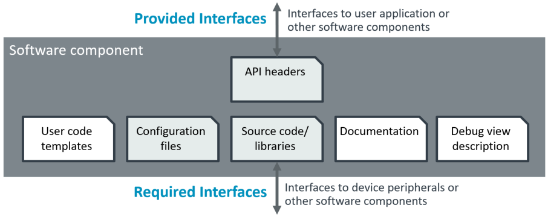
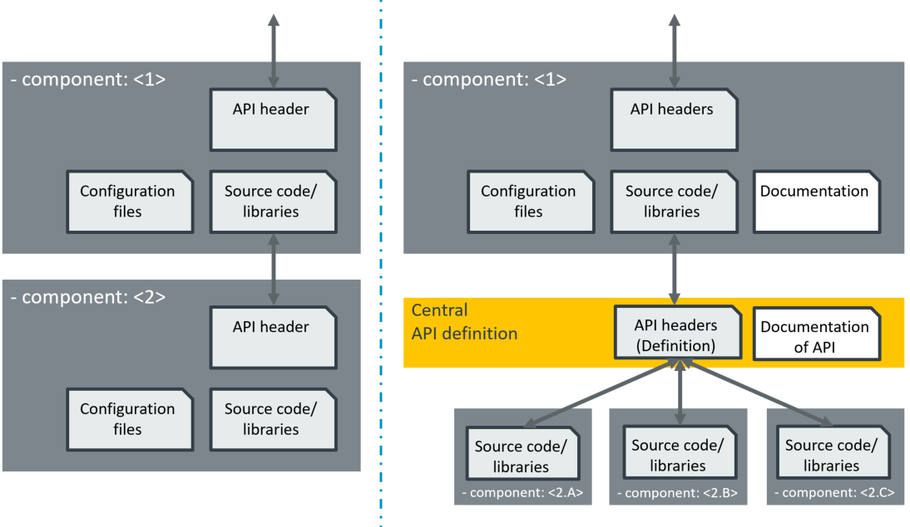
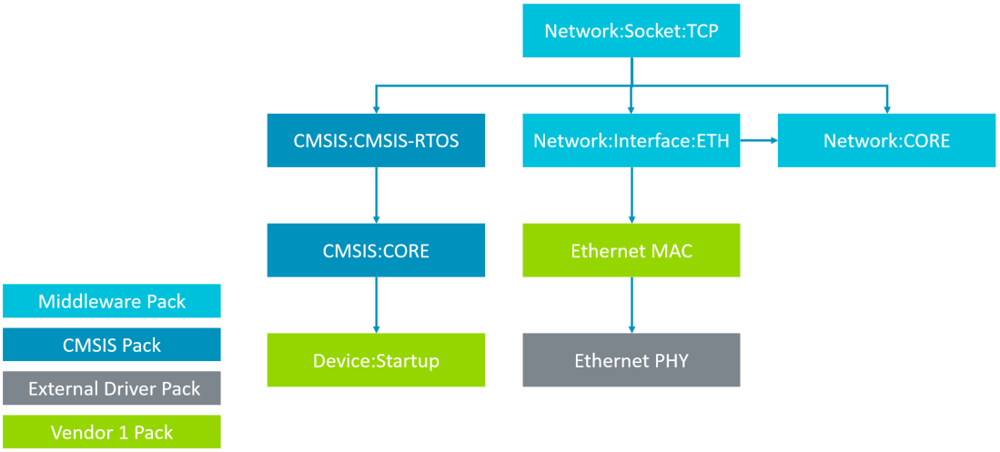
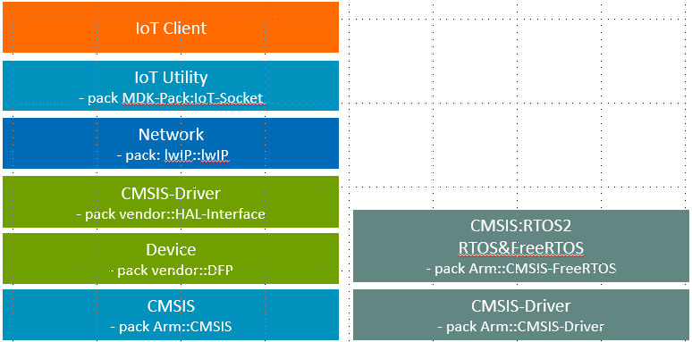

Create Applications
The following chapter explains the structure of a software pack and how it can be used in an application.
Start a Project
An application is based on a device and/or board supported by a Device Family Pack (DFP) or Board Support Pack (BSP). The steps to start a project are:
- Step: Install the DFP and BSP
- Use Device search or Board search available on web portals to identify the software packs required for your target.
-
Download the Device Family Pack (DFP) and optionally the Board Support Pack (BSP) with
cpackget. Note that a BSP is only required if you want to work with a specific board. For custom hardware, typically the DFP is sufficient. -
Step: Use a Template Project and add DFP and BSP
- Select a suitable generic Template Project or refer to the DFP documentation as some devices have specific template projects.
- Copy the template project and open the
*.csolution.ymlfile. Add underpacks:the packs identified in step (1). You may omit the version number during initial project development.
:
compiler: AC6
# List the packs that define the device and/or board.
packs:
- pack: AnalogDevices::ADuCM320_DFP
:
- Step: Use
csolution listto identify the device or board - Use
csolution list devices <name>.csolution.ymlorcsolution list boards <name>.csolution.ymlto get the device or board name. - Enter the device or board name under
target-types:. A device is typically used for custom hardware.
:
target-types:
- type: ADuCM320-Board # choose a brief name for your target hardware
# device: MyDeviceName # replace with your device or comment out to use a board
board: Analog Devices::EVAL-ADuCM320EBZ # you may omit version information
:
- Step: Add required software components
- Most projects at least require the
CMSIS:COREandDevice:Startup(or a variant) software components to be present. Usecsolution list components <name>.csolution.ymlto identify the name of the startup component and add it to the file*.cproject.ymlof your project. - Use
csolution list components <name>.csolution.ymlto identify additional software components from the selected packs. Use thecomponents:in the<name>.cproject.ymlfile to add new components and refer to related documentation for usage instructions. Note that you may omit vendor and version information for components as this is defined already by the packs that are selected.
:
components: # List components to use for your application
- component: CMSIS:CORE # The CMSIS-Core component used in most projects
- component: Device:Startup&Baremetal
- component: Device:Peripheral Libraries:ADC
:
- Refer to Using Components for more information.
-
Now, the project should already compile with the command
cbuild <name>.csolution.yml --update-rte --packs --context .Debug. Note that this step downloads missing packs and copies configuration files to the RTE directory. -
Step: Review and configure RTE files
- Review the configuration files in the RTE directory and refer to the documentation of the software components for instructions.
- Configure Linker Scripts below explains how to setup physical memory.
- For simple projects, the default settings should be sufficient.
-
The build information file
<name>.cbuild.Debug+<target-name>.ymllists configuration files of components and other useful information such as links to documentation of the component. -
Step: Add application functionality
- Implement the application code in C/C++ source files. Use the
groups:section in<name>.cproject.ymlto add new source files.
:
groups:
- group: Source Files
files:
- file: main.c
- file: MyFile1.c
:
- Again, the project should compile with the command
cbuild <name>.csolution.yml --update-rte --packs --context .Debug. Repeat step (4) when you added new components that require configuration.
Note
The Arm CMSIS Solution extension for VS Code guides you through these steps with the Create New Solution workflow.
Configure Linker Scripts
A linker script file defines the physical memory layout for a *.cproject.yml based. It may also allocate specific program sections (for example DMA buffers or non-volatile variables) to special memory regions. While complex devices may use a bespoke linker script to manage multi-core and multi-master bus systems, many single core devices can use the automatic linker script generation of the csolution Project Manager which uses a generic regions header file in combination with a toolchain-specific linker script template.
The following section describes the usage of a linker script template and a regions header file which is combined by a C preprocessor into the final linker script file. It uses auto-generated files, but the methods also apply somewhat to bespoke linker scripts.
The overall process to configure linker scripts for independent projects is:
- Step: Review and adjust the physical memory layout in the regions header file.
- Step: Optionally add specific program sections to the linker script template or change the default behavior of that file.
Regions Header File
An initial regions header file is generated based on the memory information coming from the used software packs (DFP and BSP). This file has the name regions_<device_or_board>.h and is located in the directory ./RTE/Device/<device>.
For memory with the default attribute set in DFP or BSP the following region settings are generated:
- The region __ROM0 is the startup region and contains memory with the startup attribute set.
- The region __RAM0 contains uninitialized memory, STACK and HEAP.
- STACK default is 0x200.
- HEAP default is 0xC00 for devices with more than 6KB RAM (otherwise HEAP is set to 0).
- Contiguous memory with same access (rw, rwx, rx) is combined into one region.
For memory with the default attribute no set in DFP or BSP, the memory is listed under resources that are not allocated to linker regions.
The user may modify this generated regions header file:
- to adapt the physical memory layout of the project.
- to add not allocated memory resources to regions __ROMn and __RAMn.
Example: regions_B-U585-IOT02A.h header file for a board
#ifndef REGIONS_B_U585I_IOT02A_H
#define REGIONS_B_U585I_IOT02A_H
//-------- <<< Use Configuration Wizard in Context Menu >>> --------------------
//------ With VS Code: Open Preview for Configuration Wizard -------------------
// <n> Auto-generated using information from packs
// <i> Device Family Pack (DFP): Keil::STM32U5xx_DFP@3.0.0-dev0
// <i> Board Support Pack (BSP): Keil::B-U585I-IOT02A_BSP@2.0.0-dev0
// <h> ROM Configuration
// =======================
// <h> __ROM0 (is rx memory: Flash from DFP)
// <o> Base address <0x0-0xFFFFFFFF:8>
// <i> Defines base address of memory region. Default: 0x08000000
// <i> Contains Startup and Vector Table
#define __ROM0_BASE 0x08000000
// <o> Region size [bytes] <0x0-0xFFFFFFFF:8>
// <i> Defines size of memory region. Default: 0x00200000
#define __ROM0_SIZE 0x00200000
// </h>
// <h> __ROM1 (unused)
// <o> Base address <0x0-0xFFFFFFFF:8>
// <i> Defines base address of memory region.
#define __ROM1_BASE 0
// <o> Region size [bytes] <0x0-0xFFFFFFFF:8>
// <i> Defines size of memory region.
#define __ROM1_SIZE 0
// </h>
// <h> __ROM2 (unused)
// <o> Base address <0x0-0xFFFFFFFF:8>
// <i> Defines base address of memory region.
#define __ROM2_BASE 0
// <o> Region size [bytes] <0x0-0xFFFFFFFF:8>
// <i> Defines size of memory region.
#define __ROM2_SIZE 0
// </h>
// <h> __ROM3 (unused)
// <o> Base address <0x0-0xFFFFFFFF:8>
// <i> Defines base address of memory region.
#define __ROM3_BASE 0
// <o> Region size [bytes] <0x0-0xFFFFFFFF:8>
// <i> Defines size of memory region.
#define __ROM3_SIZE 0
// </h>
// </h>
// <h> RAM Configuration
// =======================
// <h> __RAM0 (is rwx memory: SRAM1_2 from DFP)
// <o> Base address <0x0-0xFFFFFFFF:8>
// <i> Defines base address of memory region. Default: 0x20000000
// <i> Contains uninitialized RAM, Stack, and Heap
#define __RAM0_BASE 0x20000000
// <o> Region size [bytes] <0x0-0xFFFFFFFF:8>
// <i> Defines size of memory region. Default: 0x00040000
#define __RAM0_SIZE 0x00040000
// </h>
// <h> __RAM1 (unused)
// <o> Base address <0x0-0xFFFFFFFF:8>
// <i> Defines base address of memory region.
#define __RAM1_BASE 0
// <o> Region size [bytes] <0x0-0xFFFFFFFF:8>
// <i> Defines size of memory region.
#define __RAM1_SIZE 0
// </h>
// <h> __RAM2 (unused)
// <o> Base address <0x0-0xFFFFFFFF:8>
// <i> Defines base address of memory region.
#define __RAM2_BASE 0
// <o> Region size [bytes] <0x0-0xFFFFFFFF:8>
// <i> Defines size of memory region.
#define __RAM2_SIZE 0
// </h>
// <h> __RAM3 (unused)
// <o> Base address <0x0-0xFFFFFFFF:8>
// <i> Defines base address of memory region.
#define __RAM3_BASE 0
// <o> Region size [bytes] <0x0-0xFFFFFFFF:8>
// <i> Defines size of memory region.
#define __RAM3_SIZE 0
// </h>
// </h>
// <h> Stack / Heap Configuration
// <o0> Stack Size (in Bytes) <0x0-0xFFFFFFFF:8>
// <o1> Heap Size (in Bytes) <0x0-0xFFFFFFFF:8>
#define __STACK_SIZE 0x00000200
#define __HEAP_SIZE 0x00000C00
// </h>
// <n> Resources that are not allocated to linker regions
// <i> rwx RAM: SRAM3 from DFP: BASE: 0x20040000 SIZE: 0x00080000
// <i> rwx RAM: RAM-External from BSP: BASE: 0x90000000 SIZE: 0x00800000
// <i> rx ROM: Flash-External from BSP: BASE: 0x70000000 SIZE: 0x04000000
#endif /* REGIONS_B_U585I_IOT02A_H */
Linker Script Template
A template linker script file is copied to the directory ./RTE/Device/<device>. The user may modify this file:
- to specify program sections that require dedicated physical memory regions.
- to change the allocation behavior of the linker script.
Example: DMA section allocation in ac6_linker_script.sct.src linker script template
#if __RAM1_SIZE > 0
RW_RAM1 __RAM2_BASE __RAM2_SIZE {
*(.RxDecripSection) // added DMA descriptors
*(.TxDecripSection)
*(.driver.eth_mac0_rx_buf)
*(.driver.eth_mac0_tx_buf)
.ANY (+RW +ZI)
}
#endif
Note
It is recommended to add a note to the regions header file about such user modifications as shown below:
// <h> __RAM1 (is rwx memory: SRAM3 from DFP)
// <o> Base address <0x0-0xFFFFFFFF:8>
// <i> Defines base address of memory region. Default: 0x20040000
// <i> Note: DMA descriptors and buffers are in this region
Software Components
A software component encapsulates a set of related functions. By offering API headers, it provides interfaces to other software components or to the user application.
The software pack provides for a software component other optional items such as configuration files, documentation, user code templates that show the usage of the software component, and a debug view description (for CMSIS-View). A software component typically interfaces to other software components or to device peripherals.

In the CMSIS-Pack system software components:
- Are identified by the node components: using a component name.
- Use dependencies to describe required interfaces.
- List API header files for provided interfaces.
For example the lwIP network stack:
- requires an CMSIS-RTOS2 compliant kernel or a FreeRTOS kernel
- CMSIS-Drivers for the communication interface.
- List API header files for their interfaces.
Required Interfaces
There are two ways to describe required interfaces as shown in the diagram below.
- Dependency reference to a component (a selection list is supported).
- Dependency reference to a API definition. Components that implement this API fulfill then the required interface.

The API definition has the benefit that components which implement the interface can be added over time. The exact component names need not to be known by the component that requires an interface.
ToDo: A potential improvement is to use the command csolution list components to show available implementations for a required interface.
Using Components
The steps to create an application based on software components are:
- Step: Select software components
- Install the software pack that provides the required functionality (this could be based on pack datasheets) and identify the required software component(s).
- Add the pack and the component to your
*.cproject.ymlfile. - Run
csolution *.csolution.yml list dependenciesto identify other required software components. - Run
csolution list components --filterto identify packs that provide this software components. -
Repeat this step until all software components are part of your project.
-
Step: Configure software components
- Run
csolution *.csolution.yml update-rteto copy configuration files into the RTE directory. -
Set the parameters in the configuration files for your application.
-
Step: Use software components in application program
- User code templates provide a starting point for your application.
- Copy these template files to your project directory add add it to your
*.cproject.ymlfile. - Adjust the code in the user template files as required.
Example: Network Stack
In this example, the application requires TCP Socket connectivity. Using the steps described under Using Components delivers this content for *.cproject.yml file.
packs:
- pack: Keil::MDK-Middleware@7.16.0
- pack: ARM::CMSIS@5.9.0
- pack: ARM::CMSIS-Driver@2.7.2
- pack: Keil::LPC1700_DFP@2.7.1
components:
- component: Network&MDK-Pro Net_v6:Socket:TCP
- component: Network&MDK-Pro Net_v6:CORE&Release
- component: Network&MDK-Pro Net_v6:Interface:ETH
- component: CMSIS:CORE
- component: CMSIS:RTOS2:Keil RTX5&Source
- component: CMSIS Driver:Ethernet:KSZ8851SNL
- component: CMSIS Driver:SPI:SPI
- component: Device:PIN
- component: Device:GPIO
- component: Device:Startup
The required interfaces are identified using csolution list dependencies:

Adding more components such as a IoT Client would be the next step.

Update Software Packs
An update of a software pack can be performed with these steps:
- Download new software packs as needed using
cpackget. - Use the command
csolution convertwith the option--load latestto update the software packs.
csolution convert Hello.csolution.yml --load latest
- List potentially outdated configuration files using the command
csolution list configs.
csolution list configs Hello.csolution.yml --context-set
../RTE/CMSIS/RTX_Config.c@5.1.1 (update@5.2.0) from ARM::CMSIS:RTOS2:Keil RTX5&Source@5.8.0
../RTE/Device/SSE-300-MPS3/startup_SSE300MPS3.c@1.1.1 (up to date) from ARM::Device:Startup&C Startup@2.0.0
../RTE/Device/SSE-300-MPS3/system_SSE300MPS3.c@1.1.1 (up to date) from ARM::Device:Startup&C Startup@2.0.0
Note
The text update@version indicates that there is a new configuration file available. Use a merge utility to identify and merge configuration settings from a previous version. Refer to PLM of configuration files for more information.